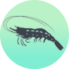
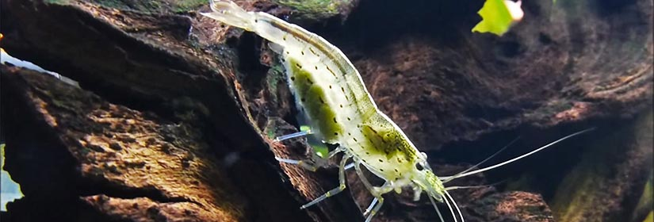
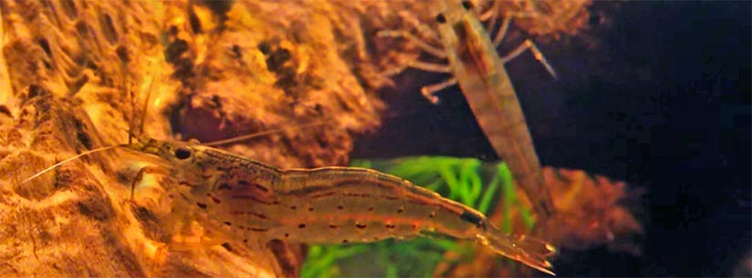

Amano Shrimp
A GUIDE TO CARING & BREEDING FOR AMANO SHRIMP (CARIDINA MULTIDENTATA)

Amano shrimp are freshwater invertebrates popular to the aquarium hobby. The name 'Amano Shrimp' is derived from the famous hobbyist Takashi Amano. Takashi Amano frequently uses these shrimp in his setup. Amano Shrimp add visual appeal and are excellent algae eaters in the aquarium. Amano Shrimp are fairly easy to maintain and care for.
Amano Shrimp are surprisingly difficult to breed in captivity. Cherry Shrimp and Ghost Shrimp will naturally breed in the aquarium without need for human intervention. Amano Shrimp on the other hand prove extremely difficult in raising the young past larvae stage of development. Amano Shrimp also require brackish (salty) water for breeding. This guide goes into fine details of breeding and increasing chances of Amano Shrimp fry survival.
Naturally their difficulty in captivity breeding increases pricing. Amano Shrimp are generally more expensive than other varieties of invertebrates. A very high percentage of Amano Shrimp in the aquarium hobby are wild caught. They have a life span of 2-3 years in captivity. Care needs to be taken introducing them to the aquarium. Amano Shrimp are very sensitive to water quality changes because they are wild caught and less tolerant to captivity.
Amano Shrimp are effective algae eaters and aquarium cleaners. They are so popular due to their ability to eat BBA, GSA, Clado, String Algae and many other algae types. In large numbers they can tackle even the most algae ridden aquarium. Siamese Algae Eaters and other fish pose more bioload on the aquarium and are pickier than Amano Shrimp. For this reason Amano Shrimp are one of, and if not the most effective algae eaters in the hobby.

Temperature ~75°F
- The temperature range for Amano Shrimp is around 70-80°F (22-26°C). Higher temperatures will increase the activity and metabolism of Amano Shrimp. This may aid in algae reduction.
pH ~7.2 | Hardness 8.0 dkh
- Amano Shrimp pH is recommended at neutral levels between 6.5 and 7.5. This range will maximize the health and metabolism of Amano Shrimp. Heavily planted aquariums often have a pH slightly below 7. Amano Shrimp will thrive in these environments with thick plant cover.
- The general hardness for Amano Shrimp should be around ~6-8dkh. TDS should be at about 200ppm.

Nitrite 0ppm
- Amano Shrimp are primarily wild caught and handle Nitrite poorly. Post cycling Nitirite should always be at 0.

Ammonia 0ppm
- Amano Shrimp are wild caught and cannot handle any ammonia spikes. Ammonia must be kept at 0.

Nitrate >20ppm
- Nitrates should be as close to 0ppm as possible. Adding plants to the aquarium and continuous water changes can aid in its reduction.

Water Changes >30%
- Water should be changed at least twice a week for Amano Shrimp. Dechlorinators are important as wild caught Amano Shrimp are very sensitive to chemical additives.

Acclimatizing Amano Shrimp
- 97% of Amano Shrimp are wild caught. For this reason they need extra care when adding to the aquarium. Before adding Amano Shrimp ensure the aquarium has been chemically tested to be within the parameters above. When purchasing the Amano Shrimp it is wise to write down the parameters of the store aquarium and fine tune the display tank to match these.
- Place the Amano Shrimp into a large bowl or bucket. Using air-line tubing and a rubber band, create a siphon from the aquarium by sucking on one end into the bucket. Lightly kink the tubing by placing the rubber band over a bent section of the tube. Adjust the kink to allow a slow drip of 1 drop of water per second exiting the tube. Let this drip into the bowl for the next 20-30 minutes and monitor closely.
- After 30 minutes carefully use a soft mesh net to transfer the Amano Shrimp into the aquarium. Cover the net with your opposite hand to prevent the Amano Shrimp escaping the net.
- Amano Shrimp can become shocked easily when acclimatizing. Keep the lights off for the first day and avoid changes in water parameters. Monitor the shrimp closely as the first 24 hours carry the highest chance of fatality.
- If the Amano Shrimp become limp and float near the surface check the water immediately. Aerate the aquarium, add a dechlorinate and perform a water change. Then try to identify the problem. Moving the Amano Shrimp to a suitable temporary home is better than leaving them in a toxic aquarium.
- Here is a link to a full guide to setting up a shrimp tank. Including setup instructions, cycling and choosing the correct hardscape in much greater detail.

Amano Shrimp Diet
- Amano Shrimp are omnivorous invertebrates and require a balanced diet. Fortunately Amano Shrimp will consume algae, decaying plant matter and left over food particles already in the aquarium. Amano Shrimp will constantly graze and scavenge the bottom of the aquarium.
- Amano Shrimp will naturally consume much of their food within the aquarium but still require supplementation. The amount of extra food Amano Shrimp will need depends on the size of the aquarium and density of shrimp. Large aquariums with few shrimp and significant algae growth will need little extra food for the shrimp. While smaller cleaner aquariums may need considerable food supplementation.
- Amano Shrimp should be given blanched zucchini, dried pellets and algae wafers. As always any excess food should be removed from the aquarium to avoid ammonia spikes.
- Amano Shrimp also enjoy moss balls and sponge filters. The fine material catches food particles and the shrimp are able to enjoy an easy meal.

Amano Shrimp Tank mates & Compatibility
- Amano Shrimp are peaceful inhabitants and can be kept with themselves and other shrimp species. They are incompatible with larger predatory fish such as Cichlids, Oscars and Arowanas. They are also incompatible with larger invertebrates such as the Cobalt Blue Lobster, Crayfish or Tangerine Lobster.
- Provided the Amano Shrimp are purchased large they are compatible with ornamental fish such as Discus and Barbs. The aquarium should allow for thick cover and hiding spots when housing Amano Shrimp with larger fish species.
- They are fully compatible with other algae eaters such as Trumpet and Nerite snails. Amano Shrimp are an excellent shrimp for planted tanks. They consume unwanted algae and thrive in the shelter of dense plantations.

Breeding Amano Shrimp
- Amano Shrimp are very difficult to breed in captivity. With a determined attitude and patience it is possible and rewarding. Mating the shrimp is easy, rearing the fry is a significant challenge. It is frustrating, exciting and will be explained step by step.
- To breed Amano Shrimp you will need to purchase at least 10 shrimp with an even ratio of males to females. Telling females from males is easy because females are generally much larger than males. To ensure this check that the line running down the side of female Amano Shrimp is fragmented and dashed. Males have the same line but it is composed of circular evenly spaced dots.
- Initially the process is very basic and follows convention from Cherry Shrimp. The Amano Shrimp should be well fed and the temperature should be raised to 78-80°F (25-26°C). The Amano Shrimp will naturally mate given stable conditions and a safe environment.
- Eggs will soon become apparent in the females. Their dorsal fins will become swollen with a noticeable increase in size. Female Amano Shrimp will release pheromones directly into the water column. Male Amano Shrimp are attracted to the scent and will try to mount females in heat. During this stage the male shrimp may fight, become agitated and increase their diet. Eventually the female will allow a chosen male to mate with her and fertilize the eggs.
- After this stage the female Amano Shrimp will lay as many as 1000-3000 eggs onto her swimmerets below the stomach. The hind of the shrimp will be ridden with green colored eggs. The eggs can take up to 5 weeks to hatch. During this stage they progress from green to light yellow brown.
- To avoid stress on female Amano Shrimp, the breeding colony should be left in the aquarium until the female is close to hatching. It is recommended to set up an aquarium with identical water quality nearby. This tank will be used for hatching the shrimp. Alternatively the larvae are drawn toward light. They can be hatched in the display tank and removed using a bright flashlight but this is not recommended.
- In nature, Amano Shrimp are reared in streams which connect to estuaries into the ocean. For this reason Amano fry need to be reared in brackish water (Saltwater). There is significant contention over the correct level of salt added to the water. You will need to purchase a hydrometer to measure the salinity. Different strains of Amano Shrimp tolerate different levels of salt. Typically anywhere from 17ppt to 35ppt is appropriate in rearing the fry. From days 30-60 salinity should be dropped to 15ppt and then 5ppt. Amano Shrimp fry can not handle elevated salinity after the metamorphosis post larvae stage of development.
- After moving the female to the rearing tank the larvae should hatch within a few days. Promptly remove the female Amano Shrimp to avoid her consuming her own young. The female will moult and almost immediately begin producing another batch of eggs.
- Upon hatching the larvae are extremely small (1/16") and should be fed a very fine concoction of brewers yeast. Be sure to add minute quantities as not to pollute the water column. They should be fed 4-8 times per day at regular intervals. Micro encapsulated fish fry food that is anywhere from 30-120 microns is appropriate during the first few weeks. It is imperative to not overfeed and pollute the rearing tank.
- Diatoms in the water column are also an important natural food source needed by the young fry. They can increase the chance of success significantly. Light sources can help contribute to growing diatoms in the water column.
- Artemia and Brine shrimp are too large for the young fry and will actually compete with them for food sources. For this reason they should be avoided in extremely early stages of development.
- As mentioned earlier, the post larvae stage begins around day 30 to day 60. It is extremely important to constantly monitor the shrimp. Once they have reached this critical stage they must either be moved to a new aquarium or the water must be reduced in salinity to at least 15ppt. They will perish within 48 hours if kept at elevated salinity levels.
- Post Larvae stage the shrimp can be fed a mixed diet of algae wafers and commercial products. Ensure the food particles are small enough fro the shrimp and excess food is removed from the aquarium.
- Amano Shrimp generally take anywhere from 3-5 months to reach maturity. The speed of development depends on feeding habits and genetic strain. At this stage they can live from 2-3 years.